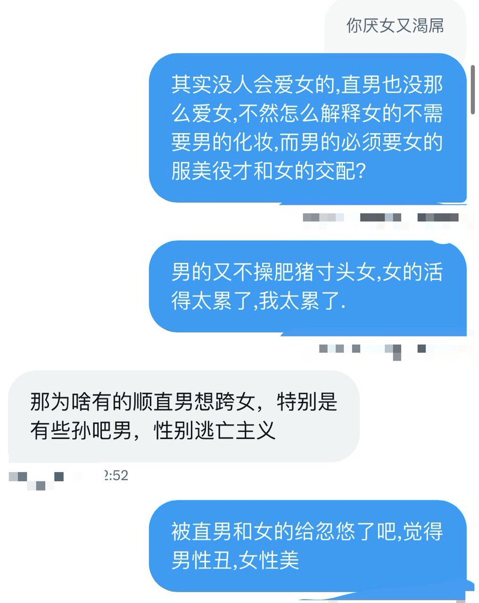

@Alluka_Nanika_n @ophyta4 顺直男想跨女还有个原因是觉得女的有特权（比如说可以卖批挣钱，他意淫里面就是又能爽又能挣钱）然后现在又很多法律都开始偏向女性，这让一直享受着特权的顺直男们开始急了，反倒觉得女的在搞特权。不过顺男娘比跨男娘圆角确实有特权是不用担心怀孕可以内设😥


@ophyta4 我感觉男性的策略是：不改变,只选择,被女的选中的男性一般都是比较健壮的,久而久之男的越来越强,且这个过程不需要任何改变和努力
女的却不愿意被选择,而是不断让自己处在一个可以挑选别人的位置,所以非常累,而且她们费心挑选男人也对改善女性的基因毫无意义,男性可不会让女性后代继承强壮高大男性特征 https://t.co/R4tBT0vNja
女的却不愿意被选择,而是不断让自己处在一个可以挑选别人的位置,所以非常累,而且她们费心挑选男人也对改善女性的基因毫无意义,男性可不会让女性后代继承强壮高大男性特征 https://t.co/R4tBT0vNja